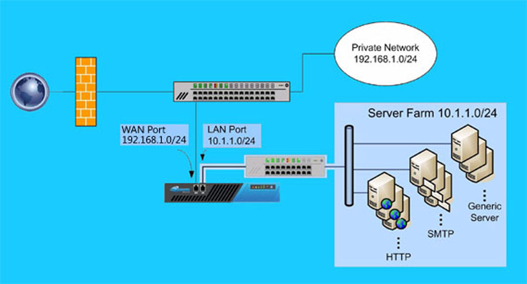

产品概述Product overview
负载均衡（Load Balance）是对多台云服务器进行流量分发的负载均衡服务。负载均衡可以通过流量分发扩展应用系统对外的服务能力，通过消除单点故障提升应用系统的可用性。

功能描述Functional description
- 支持公网/私网类型的负载均衡服务；提供4层（TCP协议）和7层（HTTP协议）的负载均衡服务。
- 对后端云服务器进行健康检查，自动屏蔽异常状态云服务器，恢复正常后自动解除屏蔽。
- 提供会话保持功能，在Session生命周期内，将同一客户端请求转发到同一台后端云服务器上。
- 支持加权轮询(WRR)、最小连接数(WLC)转发方式。支持针对监听分配其对应服务的带宽峰值。